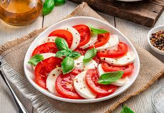
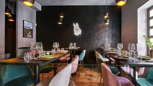

Venimos desde abajo, con esfuerzo, dedicación y amor por la cocina. Cada platillo cuenta nuestra historia y tradición familiar. ¡Descubre lo que nos hace únicos!
Explorar nuestro menúEn Sabores Ancestrales celebramos las raíces culinarias de nuestra tierra. Nacimos como un pequeño puesto familiar y con los años nos convertimos en un restaurante reconocido por su autenticidad y calidez. Cada día trabajamos con pasión para ofrecer comida tradicional con un toque moderno, respetando los ingredientes locales y la esencia de nuestras abuelas.

Cocinamos con amor y dedicación, manteniendo vivas las recetas que han pasado de generación en generación. Cada plato cuenta una historia.

Apoyamos a agricultores y productores nicaragüenses, utilizando ingredientes frescos y naturales provenientes de la región.

Nuestros chefs combinan técnicas ancestrales con presentaciones modernas, logrando una fusión de sabor, color y textura.
Te invitamos a vivir una experiencia gastronómica completa. Ven con tu familia, amigos o pareja y disfruta de un ambiente cálido, rústico y lleno de tradición.
Nos encontramos en el corazón de la ciudad, cerca del parque central. Fácil acceso y estacionamiento disponible.
Lunes a Domingo: 10:00 a.m. - 10:00 p.m.
Almuerzos, cenas y eventos especiales con reservación.
Tel: +505 8888-8888
Email: contacto@saboresancestrales.com